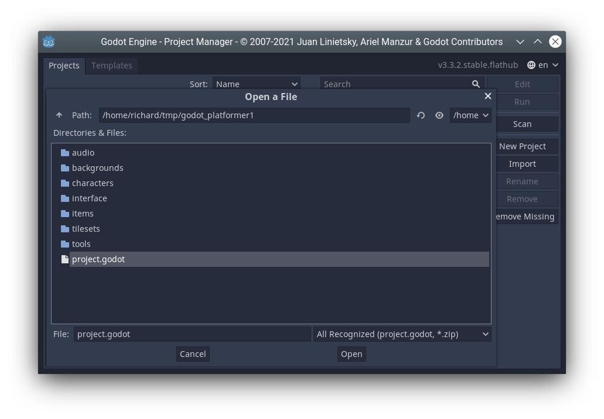

Videos to accompany this tutorial
This is a simple platformer that uses Godot's physics engine to produce a fun game with very little code. It's a good introduction to using tilemaps and scrolling cameras and can be the basis for a fully featured game. We won't be going into as much depth about how everything works in this tutorial, in order to get something working as quickly as possible.
Download godot_platformer1.zip and unzip it somewhere you can find it, e.g. your documents folder.
Run Godot. The project manager opens. Select import.
Double click the project.godot file in godot_platformer1 folder.
Project may take a while to import. When it has finished, click the run button to test it and play the game.
If you're using Git, create a repo now.
The player is a KinematicBody node.
Run the game. You will find the player can move, but not much else.
Open the file player.gd and look at the code. The _physics_process() function is called by Godot automatically, approximately once per frame. (If we weren't using the physics engine we could use _update() instead, which is always called every frame.)
The physics engine is able to tell us whether the player is_on_floor() or else is in the air. We set different velocity and animations appropriately. The player is a KinematicBody and so we need to call mode_and_slide() in order for the physics to actually do anything.
Note the use of lerp() to slow the player down in a smooth way. This uses linear interpolation.
Add this code to the end of the player.gd file. Note the first line is indented.
if jump_timer > 0:
jump_timer -= delta
if Input.is_action_pressed('jump'):
velocity.y = -400
if not $phaseJump1.playing: $phaseJump1.play()
$alien_pink.flip_h = velocity.x < 0
if position.y>700:
kill()
for i in get_slide_count():
var collider = get_slide_collision(i).collider
if collider.has_method("kill"):
if position.y < collider.position.y - 10:
velocity.y = -400
collider.kill()
func kill():
get_tree().reload_current_scene()Test the game again. You should find you can now:
Jump.
Fall off the bottom of the screen.
Face the opposite direction.
Make noise.
(Soon: Kill things you jump on)
Note
Try to work out what each line does and which lines are responsible for which features. If you don't understand any lines, ask your teacher.
Challenges
Make the player jump higher.
Make the player run faster.
Make the player fall slower.
The bee is different from the player. It's a RigidBody node. Currently it is quite harmless. Take a look at its nodes.
Questions
In the game, can you kick the bee where you want it to go?
What makes the bee able to move at all when we have not written any code for it like we did the player?
Try adding this line somewhere in the middle of the player.gd file:
velocity.x = clamp(velocity.x, -300, 300)
Question
What does it do?
Right-click on the player node and select Add Child Node. Choose Camera2d node.
In the inspector, click Current On to enable the camera.
Test the game again.
Click the tilemap2 node.
Click left mouse to place a tile and right mouse to delete a tile (you can delete my tiles if you like).
Create your own level.
Add a ParallaxBackground node to main scene. Drag it so that it is the first child node in the scene.
Add a ParallaxLayer as child node of this.
In the Inspector, set Motion->Scale->x to 0.5.
Set Motion->Mirroring-X to 1024.
Look at the images in the backgrounds folder. Drag in an image, eg. backgroundColorForest.png to the scene and drag it to become child of ParallaxLayer.
Your node tree should look like this.
Question
What is Parallax?
There is one coin node, an Area2d, already added for you. It has a sound, image and collision shape but it doesn't have a script.
Right click it, select attach script, press Create. Delete all the code that is there and enter the new code:
extends Area2D
var collected = false
func _on_coin_body_entered(body):
if not collected:
hide()
$powerUp5.play()
get_tree().get_current_scene().get_node("HUD").inc_score()
collected = trueNote
Later, once you know about global variables, it would probably be better to use a global variable for the score rather that putting it in the HUD node as I have done.
Since we will have a lot of coins it makes sense to make the coin a separate scene and then instance this scene every time we want to make a coin. Right click the coin node, select save branch as scene, click save.
Now right click on the coins node (parent of coin), select instance child scene and select the coin.tscn scene you just created. Drag the coin to where you want it. You could also use Duplicate to make more coins.
Unlike the coin, we will create our enemy scene from scratch.
Click Scene menu, then New Scene then click 2D Scene as the root node.
Right click on the root node_2d. Click Change type. Find KinematicBody2d (you can type the name) and double click it.
Right click on the root node_2d and rename it to enemy.
Press ctrl-S to save the scene. Name it enemy.tscn.
Now we need to add several child notes to the root node.
In the filesystem, find characters/enemies/ant.tscn. (Or whatever character you want to use.) Drag it on the (0,0) point in the scene. Right click on the node and rename it to sprite. Click on it and in the Inspector tick playing so we can see the animation.
Right-click the root node, Add Child Node, select CollisionShape2d. In the Inspector click on the [empty] shape and select New Rectangleshape2d.
Use the red drag spots to increase the size of the rectangle that has appeared on the sprite.
Add another child node to the root node. This time select VisibilityEnabler2d. In the inspector make sure ALL the boxes are ticked.
Right-click the root node, select merge from scene. Find audio/digital_sfx.tscn and double click it. Then select pepSound3 from the node list. Press OK. Right click on the node and rename it to deathSound.
Your node tree should look like this.
Right-click the root note, select attach script. Change the Path to res://enemy.gd. Press Create. Erase the code in the script and replace it with this:
extends KinematicBody2D
var direction = Vector2.LEFT
var velocity = Vector2(-50, 0)
func _ready():
set_physics_process(false)
func _physics_process(delta):
velocity.y += 20
velocity.x = direction.x * 50
velocity = move_and_slide(velocity, Vector2.UP)
if is_on_wall():
direction = -direction
for i in get_slide_count():
var collider = get_slide_collision(i).collider
if collider.has_method("kill"):
collider.kill()
func kill():
$deathSound.play()
direction = Vector2.ZERO
$sprite.animation = 'dead'
$collision_shape_2d.disabled = true
get_node("/root/main/HUD").inc_score()Now switch back to our main.tscn scene. Click on the enemies node. Add an enemy by dragging in enemy.tscn.
Test you can kill and be killed by the enemy.
Add more tiles, coins and enemies to create a challenging game. Get your friends to play the game.
Change the player sprite to a different one.
Add a second player controlled by a second controller.
Add a timer.
Give the player limited lives, but add powerups for additional lives.
Give the player respawn points.
Create a title screen.
Create a gameover screen.
Add additional levels, and a level select screen.